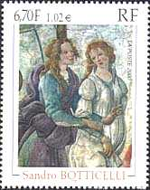

|
Please discover this space on the Web that is dedicated to the visual arts (painting, drawing, sculpting, pottery, tapestry, enamel) as they appear on stamps. It provides information about new issues, offers a huge free database (as a free download and also on-line), an extensive art gallery, a free Paintings and Arts on Stamps Internet Club (PASIC) membership, hints for beginners, useful links, polls, a magazine, pages dedicated to thematic collection, to postal history and to other subjects. You will also find many images, the more recent ones being of a good quality. |
 |
This site is the first non-commercial (*) and so far the most complete one as related to the topics Art on Stamps. It was firstly published on the Web in October 1996, being one of the oldest significant philatelic sites worldwide.
The webmaster has intended this site for you, a person who wishes to know more about the wonderful world of Art on Stamps, about topical philately and generally about stamps. It was created and is permanently updated by Victor Manta, a Swiss stamp collector, and a former member of the AIJP (International Association of Philatelic Journalists). You can benefit from his experience, because he is collecting stamps for a long time, being very active in this domain, especially on the Web.
In 1997 Mr. Manta founded PASIC, the Paintings and Arts on Stamps Internet Club, opened for free to all art on stamps collectors, and counting at time over 800 members from 85 countries. PASIC is affiliated since Jan. 2000 with the American Topical Association. Mr. Manta is also the founder and the president of the Philatelic Webmasters Organization .
The Art on Stamps site was awarded many times, in different countries, for example in the year 2000 by the International Philatelic Association (FIP).
 |
|
 |
 |
In time the webmaster has improved this successful site, by changing its appearance and by replacing the menu system with one that is compatible with most of browsers and operating systems.
|
 |
New or Recently Updated Pages cand be found under Recent Pages in the Menu. Free Download. For information about a Database "Paintings and Arts on Stamps" please click on the Download Free database AOS entry in the Menu. We list in over 10,000 records over 30,000 different stamps and over 3,200 different sheets. The database, in Excel format, was updated in May 2010. For More Information about this site please click on About in the Menu. |
 |
Search Though This Site. If you want to search through this site (for instance for a favorite painter), please enter a keyword in the space provided under the menu, in the left frame. The results of the search will appear in the frame from which you are reading now.
Should you have problems in what concerns the appearance of this site and of its menu on your screen, please send an e-mail to the webmaster (remove the spaam from the address). Thank you for your visit, and have fun!
Legal notice. This site makes use of the low resolution scanned images of stamps that mainly belong to the webmasters personal collection. These images are used for teaching, in accordance with the paragraphs 1) and 2) of the Article 10 of the Berne Convention for the Protection of Literary and Artistic Works. This utilization is compatible with Fair Practice and with Fair Use, as defined by The US Code Collection, Title 17, Chapter 1, § 107, Limitations on exclusive rights. Because the use of the images found on this site cannot be traced, the copying of any image is prohibited.
| Created:
October 1996. Revised: February 17, 2024. |
|
| Click the banner to visit the site |